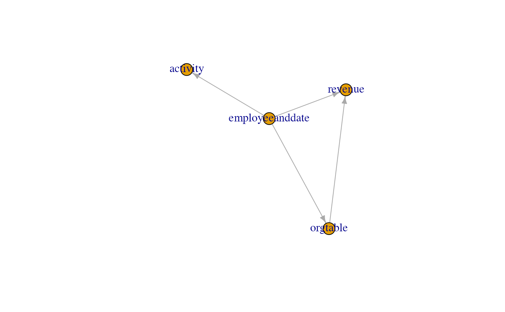

R/join_controller.R
topo_sort_tables.RdDepends on igraph package.
Please see vignette('DependencySorting', package = 'rquery') and vignette('joinController', package= 'rquery') for more details.
topo_sort_tables(columnJoinPlan, leftTableName, ...)
| columnJoinPlan | join plan |
|---|---|
| leftTableName | which table is left |
| ... | force later arguments to bind by name |
list with dependencyGraph and sorted columnJoinPlan
if (requireNamespace("DBI", quietly = TRUE) && requireNamespace("RSQLite", quietly = TRUE) && requireNamespace('igraph', quietly = TRUE)) { # note: employeeanddate is likely built as a cross-product # join of an employee table and set of dates of interest # before getting to the join controller step. We call # such a table "row control" or "experimental design." my_db <- DBI::dbConnect(RSQLite::SQLite(), ":memory:") RSQLite::initExtension(my_db) tDesc <- example_employee_date(my_db) columnJoinPlan <- build_join_plan(tDesc, check= FALSE) # unify keys columnJoinPlan$resultColumn[columnJoinPlan$resultColumn=='id'] <- 'eid' # look at plan defects print(paste('problems:', inspect_join_plan(tDesc, columnJoinPlan))) # fix plan sorted <- topo_sort_tables(columnJoinPlan, 'employeeanddate') print(paste('problems:', inspect_join_plan(tDesc, sorted$columnJoinPlan))) print(plot(sorted$dependencyGraph)) DBI::dbDisconnect(my_db) my_db <- NULL }#> [1] "problems: key col(s) ( dept ) not contained in result cols of previous table(s) for table: revenue" #> [1] "problems: "#> NULL